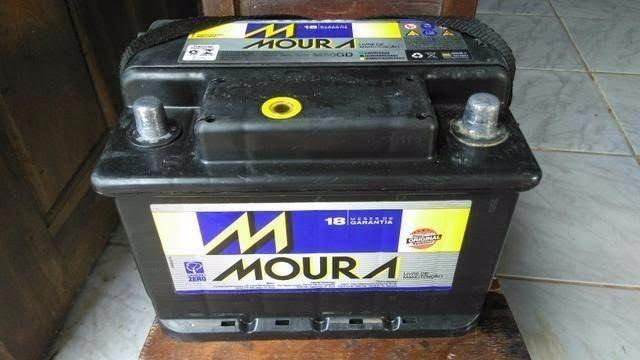

BATERIA
Uma bateria automotiva é um tipo de bateria recarregável que fornece energia elétrica para um automóvel. Geralmente isso faz referência a uma bateria SLI (partida, iluminação, ignição) para alimentar o motor de arranque, as luzes e o sistema de ignição do motor de um veículo.